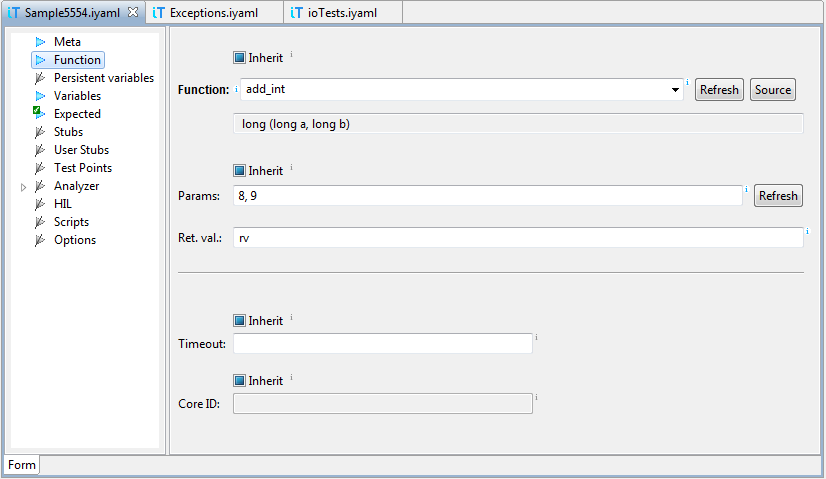

It is recommended that winIDEA has symbols loaded and testIDEA is connected to winIDEA. This way content assistance is available, and function prototypes are shown in testIDEA. Timeout specifies when testIDEA terminates test case execution, if it does not end normally. See tooltip for more details.
"<sourceFile>#"<functionName>,,<downloadFile>
where:
moduleName - name of the C source file, which
contains the function (optional)functionName - name of the functiondownloadFileName - name of the download file,
where the function is located
"calc.c#"add,,math.elf
The source file name is needed only for file static functions, for
all other functions we can specify only download file, for example:
add,,math.elf
The setting for using fully qualified or simple function names in
content proposals is located in testIDEA File |
Properties | General dialog, check-box Use qualified
function names.
"080023AA###"calculate
Since these are not regular functions, they can not be used by testIDEA
as tested functions, stubs, user stubs, or profiler areas.
"Vehicle.cpp#"testOverloads(long,long)
Name of the source file is not mandatory.